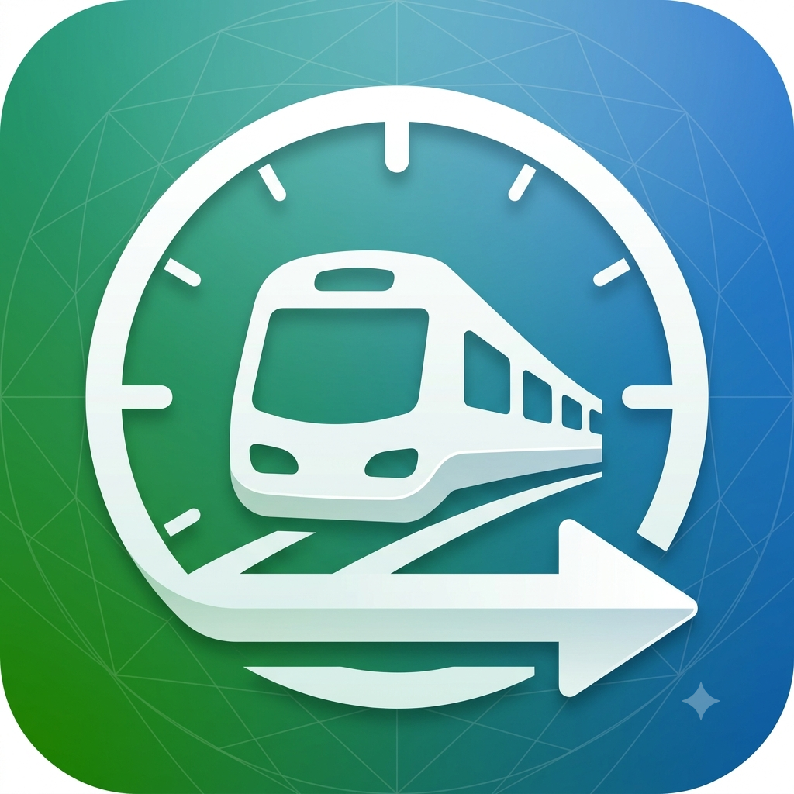

次の電車 NextTrain
いつもの経路の次の電車をすぐ確認 Quickly check the next train for your usual route
アプリについて About
「次の電車」は、通勤・通学などでよく使う経路を登録し、次に乗る電車、その次の便、最終到着時刻をすばやく確認するためのアプリです。移動を開始すると、乗車中・乗り換え・到着までの進捗を見やすく案内します。
NextTrain helps you register routes you use often, such as your commute, and quickly check the next train, the following option, and the final arrival time. After you start a trip, it guides your progress through boarding, transfers, and arrival.
主な機能 Features
- よく使うルートを最大4件まで登録Register up to four frequently used routes
- 経路候補から使いたい固定ルートを選択Choose the fixed route you want from route candidates
- 次に乗る電車、その次の便、最終到着時刻を表示See the next train, the following option, and the final arrival time
- 左右スワイプやボタンで前後の便へ切り替えSwitch to earlier or later options with swipe gestures or buttons
- 移動中の進捗を表示し、Live Activityでロック画面にも対応Track trip progress, with Live Activity support on the Lock Screen
よくある質問 FAQ
無料でどこまで使えますか？What can I do for free?
無料利用回数の範囲内で、ルート登録、次の電車の確認、移動開始をお試しいただけます。継続して使う場合は買い切り版をご利用ください。
Within the free usage limit, you can try route registration, checking the next train, and starting trips. To keep using the app, use the one-time unlock.
買い切り版はいくらですか？How much is the one-time unlock?
買い切り版は ¥980 です。サブスクリプションではなく、一度の購入で利用回数の制限なく移動を開始できます。
The one-time unlock is ¥980. It is not a subscription; one purchase removes the trip-start usage limit.
機種変更しました。買い切り版を元に戻すには？I got a new device. How do I restore my purchase?
同じApple IDでサインインのうえ、アプリ内の「購入を復元」をお試しください。買い切り版は追加料金なしで再有効化されます。
Sign in with the same Apple ID and use “Restore Purchases” in the app. Your one-time unlock will be re-enabled at no extra charge.
登録した経路情報はどこに保存されますか？Where is my route information stored?
登録したルートや移動中の進捗は端末内に保存されます。駅候補検索・経路検索のため、入力した駅名、駅ID、日時、経由駅、新幹線利用設定などは経路検索APIへ送信されます。
Registered routes and trip progress are stored on your device. For station suggestions and route search, entered station names, station IDs, date/time, via stations, and Shinkansen settings are sent to a route search API.
広告や追跡はありますか？Are there ads or tracking?
ありません。広告表示、広告目的のトラッキング、解析SDKは使用していません。
No. The app does not show ads, perform ad tracking, or use analytics SDKs.
動作環境 Requirements
| 対応OSOS | iOS 17.0+ |
|---|---|
| 対応端末Devices | iPhoneiPhone |
| 価格Price | 無料（買い切り版 ¥980）Free (one-time unlock: ¥980) |
お問い合わせ Contact
ご質問・ご不明な点は、以下のメールアドレスまでお気軽にご連絡ください。
For any questions, please feel free to reach out by email.
ykapp.dev0123@gmail.com端末とiOSのバージョンを添えていただくとスムーズです。 Including your device and iOS version helps us respond faster.